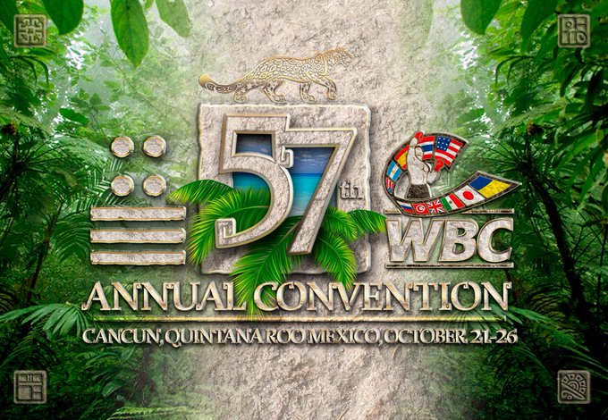

Cancún será sede de la 57 Convención del Consejo Mundial de Boxeo
Cancún recibirá la edición 57 del Convención Anual del Consejo Mundial de Boxeo (WBC en inglés) del 21 al 26 del próximo octubre.Según un comunicado de la WBC, se reunirán estrellas internacionales del boxeo, se realizarán ponencias, clínicas médicas, la aprobación de las clasificaciones mundiales, el nombramiento de retadores oficiales para cada campeón en las 17 divisiones y seminarios para oficiales de ring, jueces y réferis. "Cancún vuelve a hacer historia; enriquecer y actualizar el boxeo, pensando siempre en la seguridad y la salud del boxeador", menciona el comunicado.
|